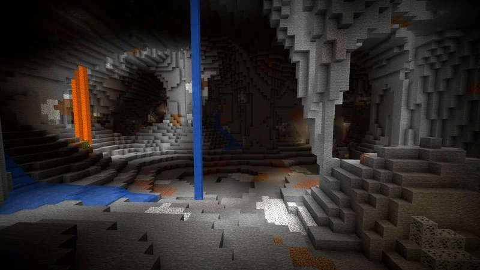

Mining is one of the most important activities in the game. It's in the name of the game after all.
There are 8 different ores in Minecraft, all with their own unique properties and uses.
Here is a list of every ore in the game.
- Coal
- Copper
- Iron
- Lapis Lazuli
- Redstone
- Gold
- Diamond
- Quartz (Nether only)
Each ore has its own unique use and function. Here is a quick summary of their uses.
Coal is primarily used for fuel and torches, with a few other side uses.
Copper is used for lightning rods and spyglasses. (Copper is a new addition, so it has very little use.)
Iron is used for a wide variety of tools, armor and equipment/blocks. Iron is one of the most useful resources in the game.
Lapis Lazuli is used in enchantment tables to enchant tools and weapons. It can also be used as blue dye.
Redstone has many functions. It's used in circuits, contraptions and other mechanisms. It is a very complex part of the game.
Gold can be used for tools, weapons and armor, however it's not a good idea to use them in that manner. Gold equipment has very low durability.
Gold is most useful in the Nether to protect yourself from piglins. Gold is also used in some item crafting recipes.
Diamond can be used to create tools, weapons and armor. Diamond tools are extremely useful and durable.